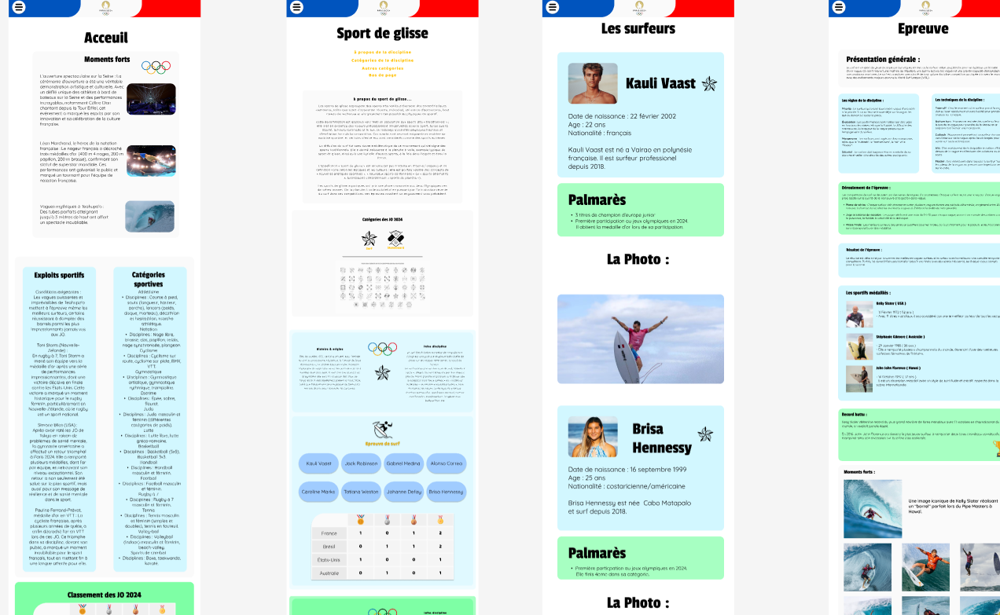
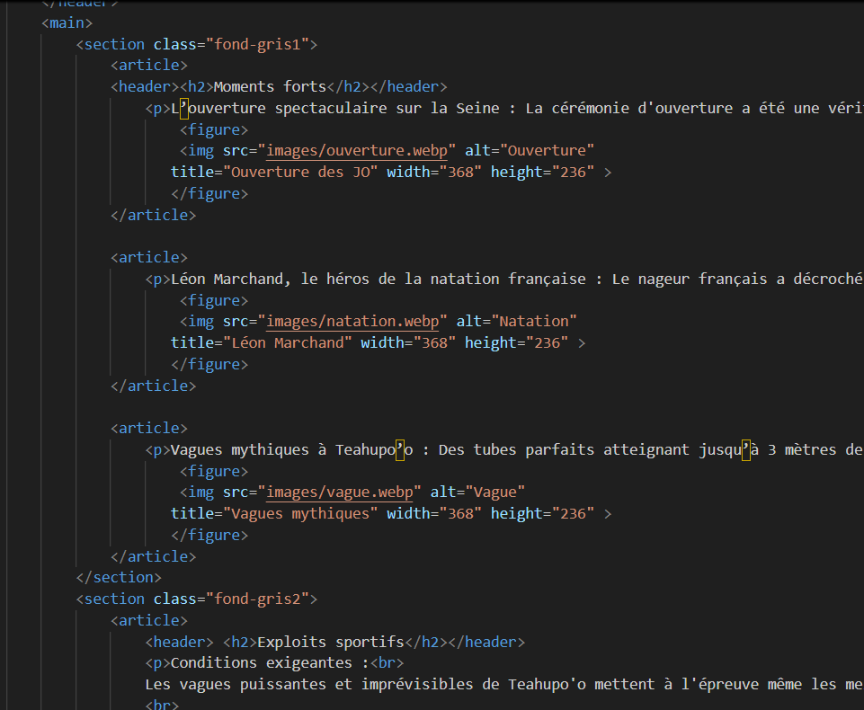
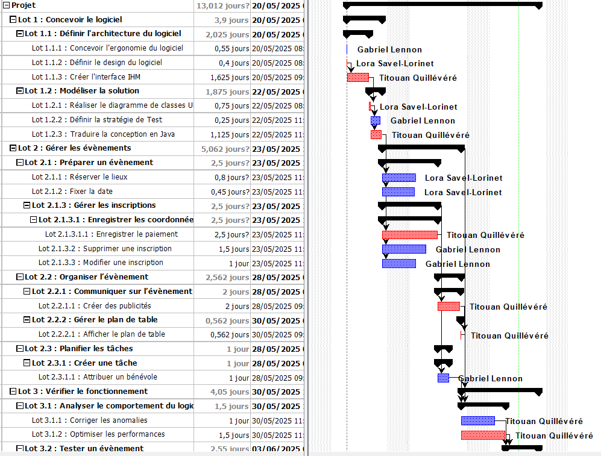
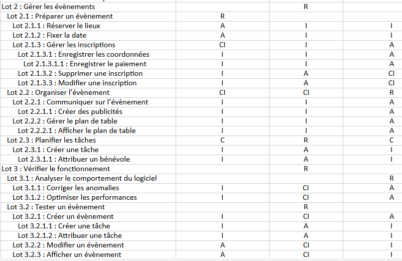

Jeux Olympiques

Le projet de développer un site web est un projet
très complet. En effet, dans le cadre de ce projet,
nous avons utilisé plusieurs méthodes de gestion de
projet pour réaliser le site internet des jeux olympiques
de Paris 2025. Tout a commencé avec le recueil des
besoins d’un client. Puis la conception d’une maquette
pour le site internet. Enfin, en utilisant les langages
HTML5 et CSS3, nous avons développé un site pour notre client.
L’objectif était de découvrir le travail de groupe, améliorer ses
compétences dans ce domaine-ci, travailler la communication pour
mener à bien ce projet.

Appli EllaDanse

La gestion de projet est indispensable pour atteindre au mieux son objectif. C’est pour
cela que, durant le mois de mai et de juin, en groupe, nous avons étudié le cas d’une
association de danse demandant une application pour gérer les événements, les membres
de l’association, etc. Nous avons donc rédigé plus livrables pour pouvoir mener à bien
notre projet. Nous avions besoin de découper les tâches à réaliser en lot. Y appliquer
la méthode de RACI (Responsable, Acteur, Consulter, Informer). Nous avons estimé la durée
de chaque tache afin de réaliser un Gantt prévisionnel pour le développement de notre
application. Ce projet nous force à communiquer dans un groupe, à gérer et comprendre
les besoins d’un client.
